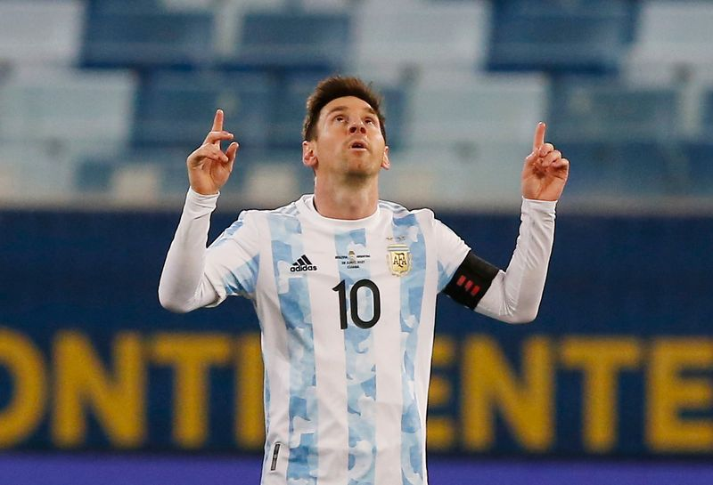

Lionel Andrés Messi
Esta página es creada en homenaje al mejor jugador del mundo. La persona que me hizo emocionar más de una vez. Soy Joaquín Sánchez Gavier y creci viendo jugar a Messi al fútbol. Con el paso del tiempo y el miedo de un retiro, cada vez más cercano, decidí crear esta página para poder recopilar los datos más relevantes de su carrera. El miedo y la incertidumbre es cada vez más grande, pensar cada día si es posible ver en algún futuro un jugador parecido. Por eso me propuse disfrutar al máximo sus últimos pasos en el deporte. Ojala seas eterno pulga.